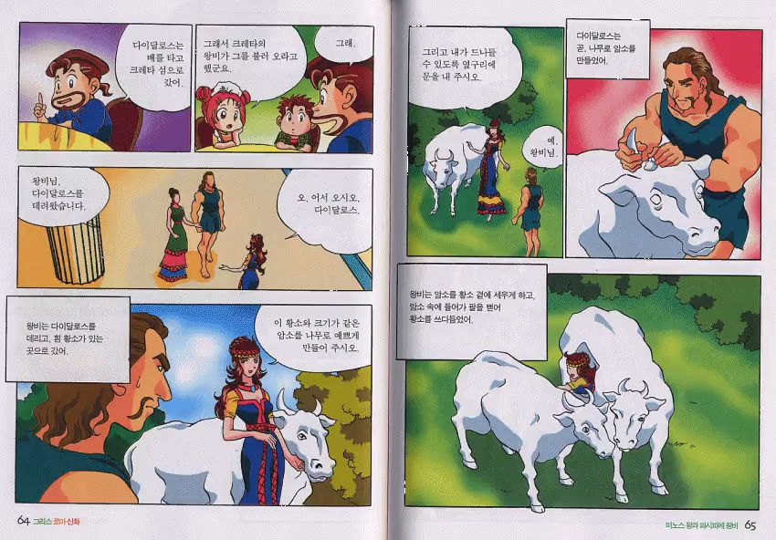
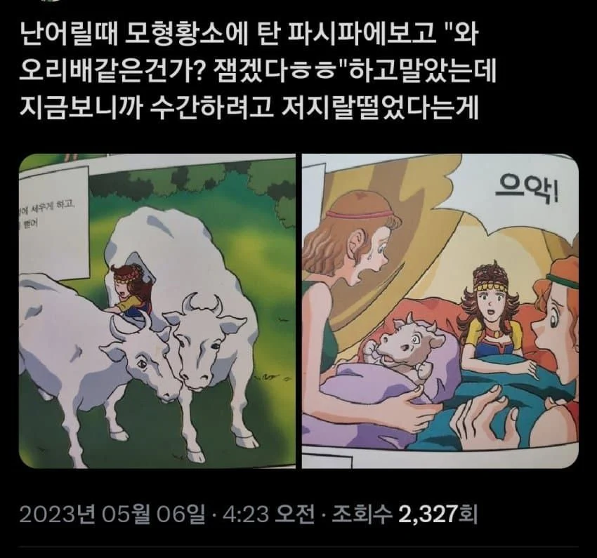
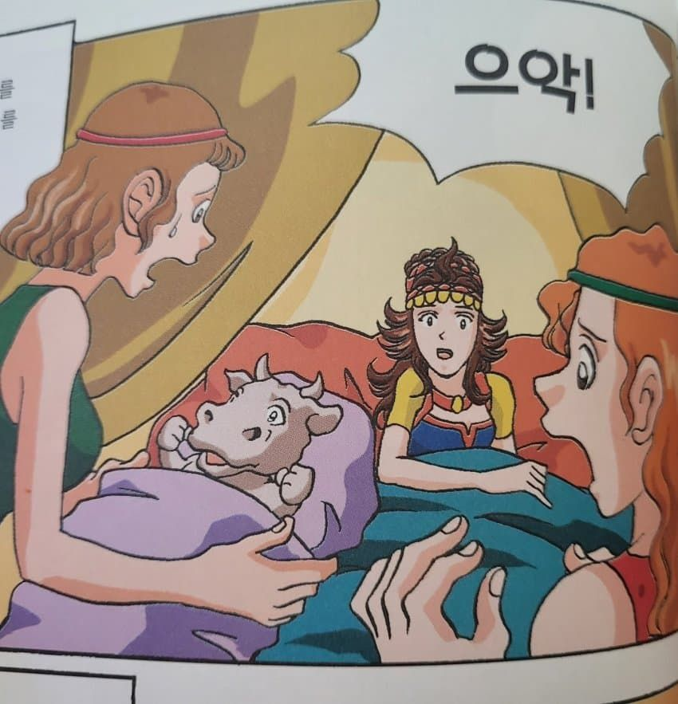
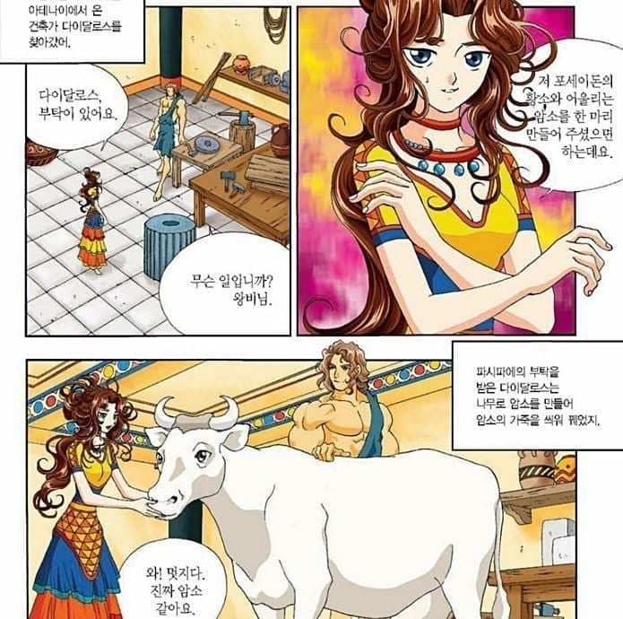
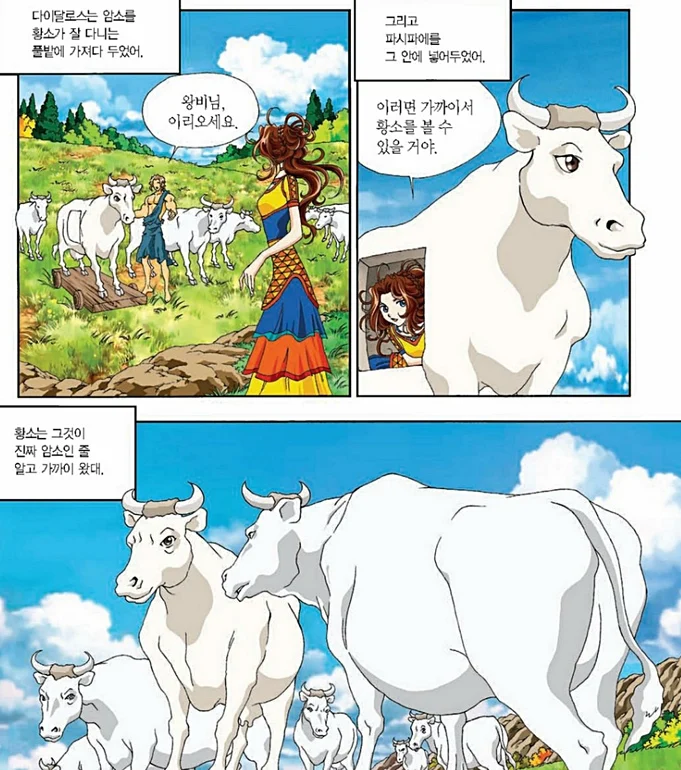
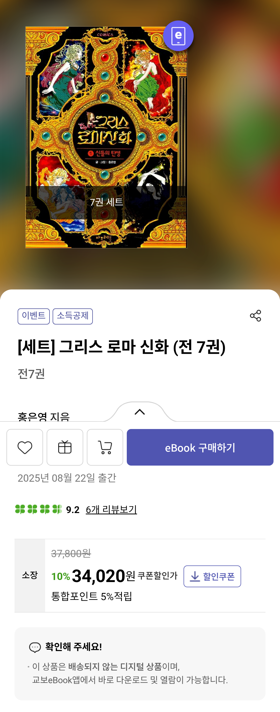

최근에 홍은영의 "만화로 보는 그리스 로마 신화" 중고가가 미쳐날뛰고 있다던데 사실 굳이 이거 살 필요없음
대신 현재도 구매가능한 "(홍은영의) 그리스 로마 신화" 구매하는 게 더 나음
수십년전에 절판되서 중고로만 구매가능한 홍은영 그림의 "만화로 보는 그리스 로마 신화" (가나출판사)



현재도 구매가능한 홍은영의 "그리스 로마 신화"


작화력은 절판된 "만화로 보는 그리스 로마 신화"보다 현재도 판매하는 "(홍은영의) 그리스 로마 신화" 가 압도적임

지금도 교보문고에 전자책으로 전권 구매가능함
댓글
수집 당시 댓글 17개
도쿄피에스타 · 2 일 전
나도 그생각으로 전화 해서 있냐고 물어봤지 수학 도둑 팔아야 하는데 74권까지 있긴한데
머큐리 · 2 일 전
나 집에 전권다있는댐
동정꼬꼬마 · 1 일 전
전자책도 됨?
꿈만꾸지말고일어나 · 1 일 전
예전에 무서운게 딱 좋아 전권 알라딘에서 싸게 줍줍해서 전권 다모으고 유행타서 권당 2만원으로쳐서 세트로 20에 팔았었는데ㅋㅋㅋ
댕댕댕댕 · 1 일 전
하여튼 우리나라 근들갑은 알아줘야함
역도소년 · 1 일 전
이거 전자도서관으로 전권 다 볼수있음 전자책으로 ㅋㅋ
웃참달인 · 1 일 전
집에 전권있는데 집에 한번 물 차서 안펴짐 ㅅㅂ..
RCkitten · 1 일 전
난 어릴적에 저거 보고 '? 왜 황소를 가까이서 볼려는 거지?' 이거말고는 생각이 더 안들더라. 그리고 소머리로 태어난 아기는 '뭔 저주같은걸 받았나보다' 이 이상 생각이 안들고. 나중에 알꺼 다 알게되고 진상을 파악하고 나서 경악했음
아침밥 · 1 일 전
가까이서 (-20cm)
제8690부대 · 12 시간 전
그때는 아기가 만들어지는 프로세스를 몰라서 그냥 가까있으면 되는줄 알았음. 나중에 수간가능 황소모형 그림을 보고 눈을떳지
사촌간불알빨기 · 1 일 전
딜도잘넣는사람 · 1 일 전
실제로는 구멍 달려있어서 수간충 남자랑 한거 아니었을까
사촌간불알빨기 · 1 일 전
뭐 결국은 미노타우로스를 낳았으니 소랑 쎆쓰한게 맞긴 함 ㅋㅋ
딜도잘넣는사람 · 1 일 전
그건 신화고 실제로는 ㅋㅋ
그런데이것은틀렸습니다 · 1 일 전
이자부터 니이름은 미노타우르스여
안흥찐빵 · 1 일 전
이사하면서 한 10권 버렸는데 20만원은 하는거였냐
하와와빌런 · 1 일 전
나 한 4년쯤전에 홍은영 그리스로마신화 이북으로 샀었는데 다시 보고싶어도 플랫폼 어디였는지 도저히 기억안나서 못보는중